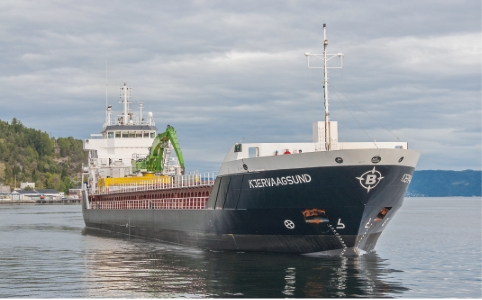
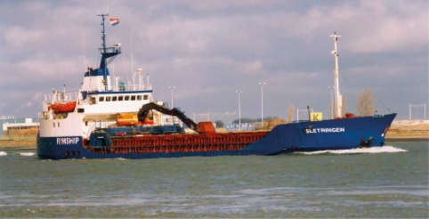
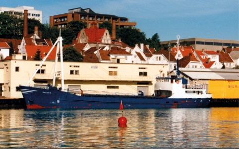
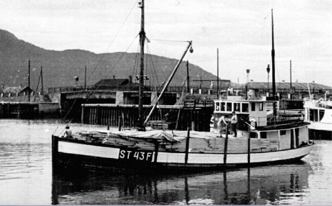

Flåten til Berge-familien og Berge Rederi
Skip
tdw
byggeår
tid
type
1
SELVAAGSUND
80
1925
1948–76
fraktekutter
2
ÅSØY
540
1970
1987–90
lastebåt
3
OPTIMAR
730
1960
1997–99
fôrbåt
4
OPTIMAR
800
1971
1999–03
fôrbåt
5
SLETRINGEN
2859
1976
2000–05
selvlosser
6
FROHAVET/JAGO
1066
1975
2004–08
fôrbåt
7
SLETRINGEN
2500
1992
2005
–
selvlosser
8
FROAN
3808
1985
2007
–
selvlosser
9
SELVAAGSUND
2246
1993
2008
–
selvlosser
10
JAGO
2179
1988
2008–17
selvlosser
11
TITRAN
4775
1996
2009
–
selvlosser
12
SULA
3713
1992
2012
–
selvlosser
13
TIFJORD
1770
1985
2012–15
selvlosser
14
OPTIMAR
2888
1983
2013–18
selvlosser
15
KNARRLAGSUND
6033
2004
2014
–
selvlosser
16
TIFJORD
5049
1999
2017
–
selvlosser
17
KJERVAAGSUND
5750
2005
2018
–
selvlosser
18
KYA
6063
2004
2018
–
selvlosser

Sletringen (2859 tdw) første selvlosser i 2000
Optimar (2) (800 tdw) ble også Dananor
Kjervaagsund (5750 tdw) kjøpt i 2018
Jago (1066) gikk i fôrtransport 2004-08

Nordvik (730 tdw) kjøpt i 1997

Familieskuta Selvaagsund 1925